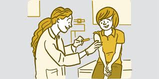

1- Lavarse las manos😁
Lavarse las manos es una de las mejores formas de ayudar a prevenir una infección. Deben lavarse las manos con agua limpia y jabón. También pueden utilizar geles a base de alcohol.
1- Lavarse las manos😁
Lavarse las manos es una de las mejores formas de ayudar a prevenir una infección. Deben lavarse las manos con agua limpia y jabón. También pueden utilizar geles a base de alcohol.

2- Seguridad de los alimentos😃

Las vacunas son una excelente manera de prevenir muchas infecciones graves. Los niños deben recibir todas las vacunas infantiles de rutina.
 Para más información, click aquí.